ASEAN Chief Smart City Officer Handbook
A citizen-centric smart city playbook forged under real pressure—not conference rooms. From the CSCO Workshop in Nakhon Si Thammarat, Thailand.

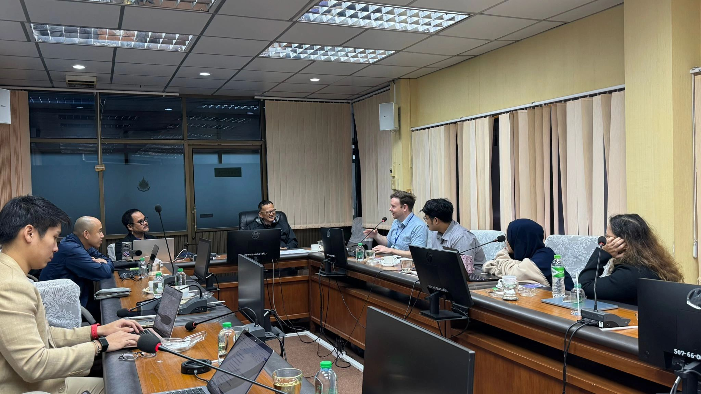
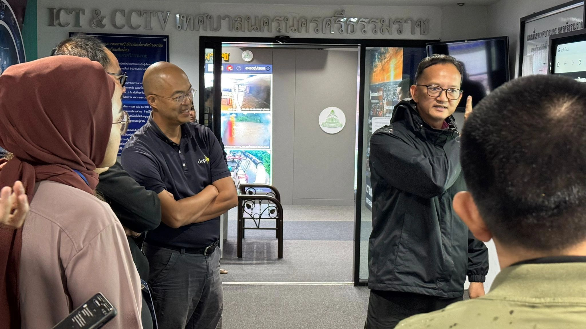
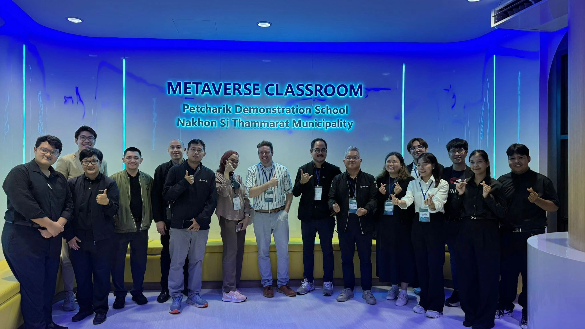
No-Cliché Manifesto
The NST Model isn’t magic. It’s a replicable framework—from citizen-facing solutions to the governance that makes everything possible.
Citizen-facing solutions that solve real problems. The @NakhonCity platform, Hospital on Wheels, real-time flood cameras. Reducing pothole repair from 15 days to 48 hours.
The @NakhonCity platform: Over 70% of the population uses it. 38,000 complaints resolved in three years. $500,000 saved in operational costs.
Hospital on Wheels: A smart bus with doctors, nurses, and pharmacists brings healthcare to 60,000 residents who can’t easily travel to the hospital.
Flood Management: Publicly accessible water-level cameras give citizens a 10-hour “golden period” to prepare.
The “why” behind the technology. An “eatable” smart city where complex tech becomes simple, tangible benefits every citizen can understand.
The “Clever Cats” Analogy: “You drag a cat forward, it will go backward. But if you are a stupid cat, all the clever cats want to follow.”
Social Measure, not Social Pressure: Make adoption fun. Use gamification, community engagement, and peer visibility.
2,000 student volunteers trained to help senior citizens use the platform. High schoolers become digital bridges to the older generation.
A dynamic public-private partnership combining local knowledge, startup agility, and national strategic guidance. No big consulting firms needed.
City Leadership: Local knowledge, political will, deep understanding of citizen pain points.
Digital Startups: Agile, cost-effective solutions. The platform was built by a small local startup.
National Agency (depa): Strategic guidance, ecosystem support, co-funding via the Digital Catalog.
The “Strong Mayor” system—direct election, executive power, budget control, and direct accountability to citizens.
Before 1997: Mayors chosen by municipal assembly. Diffuse power, short tenures, limited accountability.
After 1997: Directly elected mayors with executive authority, secure tenures, control over budgets. Voter turnout rose from 40.59% to 73.12%.
Mayor Kanop’s guarantee: “If you report it, the city will fix it in 48 hours. If it’s not done, the mayor must go out and fix it.”
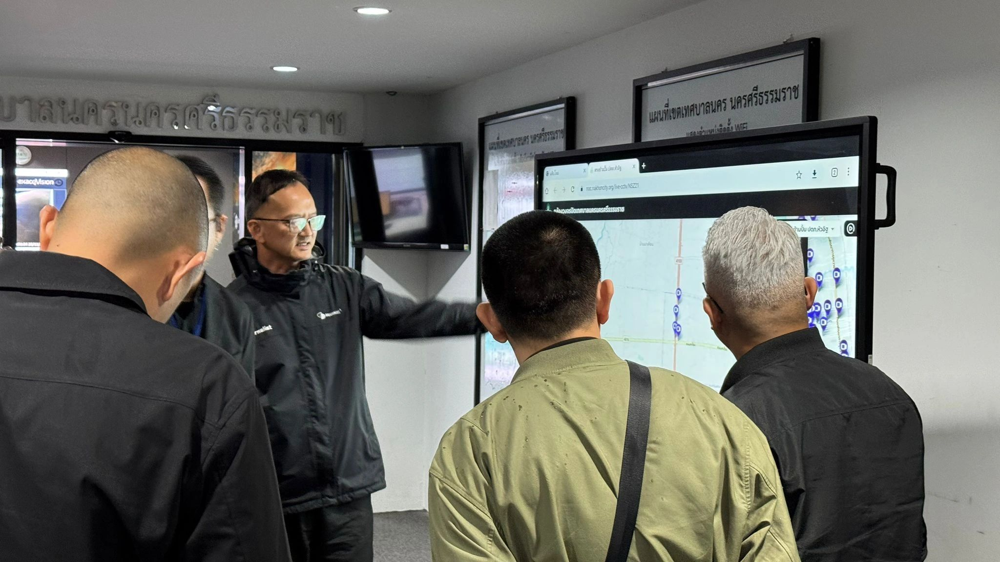
Workshop participants examine NST’s real-time city monitoring dashboard with the mayor’s team.
Not theory—a tested sequence from pain point to scaled solution.
Start with Pain, Not Technology
Identify what frustrates your citizens. The @NakhonCity platform was born from citizen frustration with a 15-day paper-based pothole repair process.
Define the Human Benefit
The Hospital on Wheels wasn’t about deploying an IoT bus. It was about 60,000 elderly residents who couldn’t travel to the hospital.
Use What You Have
The flood sensors were cheap. The screens were old. The LINE group was free. What made it work was the system design. Partner with local startups, not global consultants.
Test Small, Learn Fast
“Launch pilots in weeks, not years.” The @NakhonCity platform was rebuilt twice in three years based on user feedback. Then scale.
Six proven ideas. No permission required. Click to copy a ready-to-use JSON block you can paste into any no-code builder or AI tool.
A smart bus with doctors, nurses, and pharmacists. Telemedicine link to the city hospital. 4,000+ patients served.
Copied!City-maintained marketplace for local vendors. QR codes link stalls to digital storefronts. Zero tech skills required.
Copied!Monthly live session: the mayor teaches and answers real questions. 170,000 views in 3 hours during flood broadcasts.
Copied!Real-time citizen ratings of every service interaction. Call center workload dropped 37%. Satisfaction rose from 68% to 92%.
Copied!AR/VR in real classrooms for 11,000 students. 300 trained teachers, 1,500 digital lessons. Parents demand expansion.
Copied!Every meeting starts with a live dashboard. Complaint volumes, resolution rates, sensor readings. Data beats opinions.
Copied!The brain of the smart city. A multi-channel listening and analytics platform that turns noise into operational intelligence—built as a direct product of this workshop.
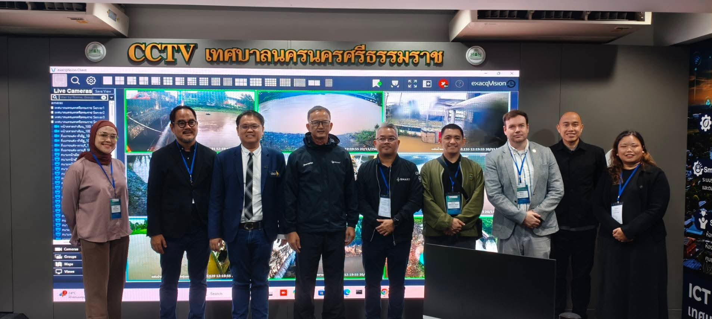
Most cities have data, but no insight. During the workshop, we discovered that the citizen reporting system that made NST famous could be dramatically enhanced with AI. So we built it.
Collecting data from IoT sensors, LINE messenger (Thailand’s #1 chat app with 54M+ daily users), and existing city databases in one stream.
Automatically structuring unstructured citizen reports—photos of potholes, flood complaints, broken lights—into actionable operational data.
The first platform in the region aligned with global urban indicators—endorsed by Clinton Moore from UNDP during the workshop.
Why LINE Messenger? In Thailand, 95% of smartphone users have LINE installed. Building a mini-app inside LINE means zero downloads, zero friction, instant citizen adoption. You don’t build a new app people won’t download—you go where they already are.
Real-time operational intelligence. What a smart city command center sees right now. For privacy reasons (PDPA compliance), we show anonymized metrics rather than the live citizen photo feed—though the full system does process images, geolocations, and sentiment analysis in real time.
Scan a QR code to test the citizen reporting system. Report an issue, see it on the dashboard. This is the same system NST uses—now AI-enhanced and available via LINE and Telegram.
LINE Mini App
Thailand’s #1 — 54M daily users 🇹🇭
Telegram Bot
International access 🌏
Real quotes, real decisions, real consequences.
Mayor, Nakhon Si Thammarat
“You don’t push high technology to people. Show them the benefits. They decide. I am the last one in the train—I follow where they choose to go.”
PhD in engineering. After losing a controversial election in 2011, he spent years walking neighborhoods. Won all 24 council seats in 2021. Re-elected in a landslide in 2025.
Strategic Advisor & Handbook Architect
“If a city can’t explain what it’s doing in one sentence, it doesn’t know what it’s doing. This handbook should read like a Netflix documentary, not an academic paper.”
Bridges complexity and clarity. Pushed the team to write stories about real people. Orchestrated the workshop, designed the RAC knowledge system, and coordinated the AI-assisted production.
Asst. City Administrator, Davao City, Philippines
“Learning directly from a city leader making real decisions is completely different from any conference. Despite the rain, I made it a point to be here.”
15 years in city government. Came looking for a transit solution for Davao’s 7,000 jeepneys. Left with a governance framework and a free bus-tracking system from a Thai startup.
UNDP Urban Governance
“You call the mayor—does he pick up? In NST, the fate of the city diverges from that single decision.”
10 years in Australian local government, including Melbourne. Designed the handbook’s governance chapter as a “Choose Your Own Adventure” story.
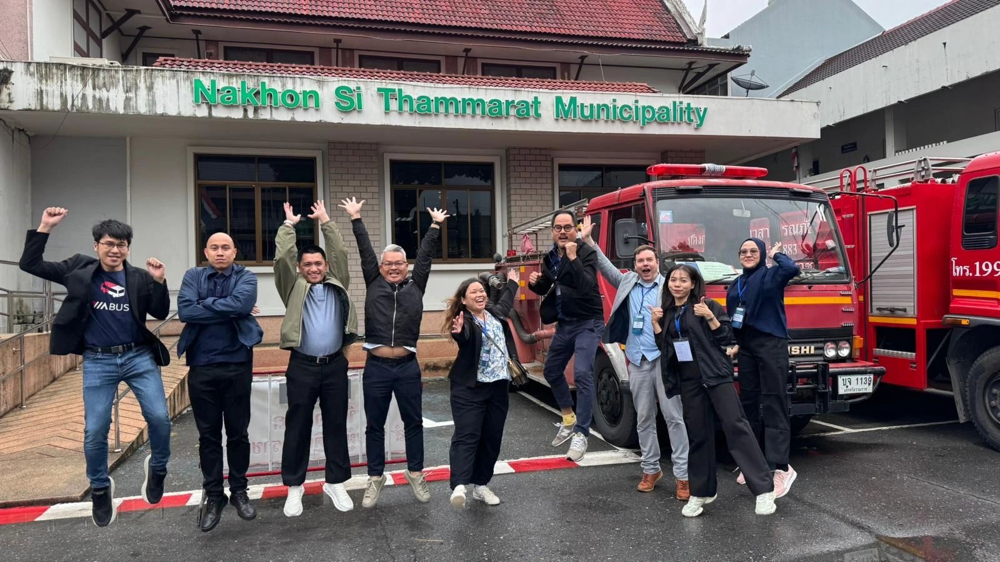
The ASEAN CSCO Workshop team in front of Nakhon Si Thammarat Municipality—between sessions and floods.
Real messages from the ASEAN-CSCOs group. Logistics, laughs, and late-night AI summaries—this is how a handbook gets built.
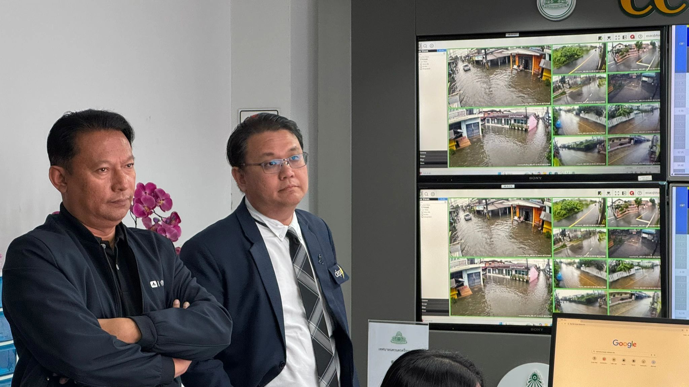
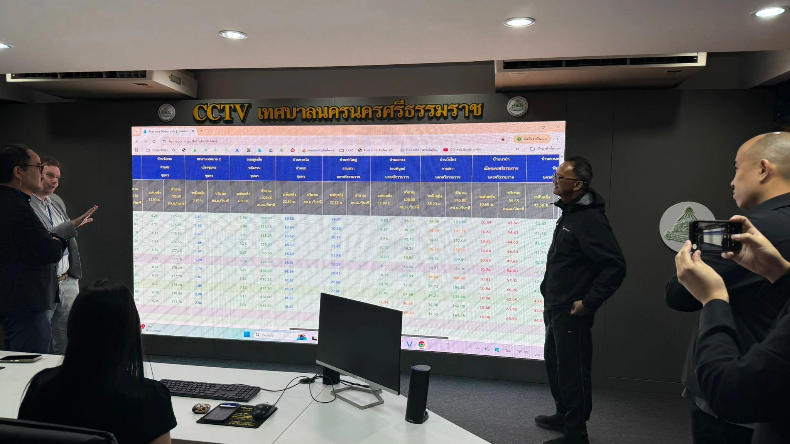
The rain started on a Tuesday. By Thursday, the water was at waist level in the old quarter. But this time, something was different. The city already knew it was coming.
Ten hours before the flood hit the city center, sensors upstream had triggered alerts. The war room—a modest room with large screens, a LINE group, and three people who hadn’t slept—had already dispatched sandbag crews, opened evacuation shelters, and pushed warnings to 112,000 phones.
This wasn’t a miracle of technology. It was a miracle of timing. The sensors were cheap. The screens were old. The LINE group was free. What made it work was a system designed around one question: How do we buy more time?
Why LINE? In Thailand, LINE is the dominant messaging platform—54 million daily active users. Unlike WhatsApp, LINE supports mini-apps, official accounts, and push notifications that reach citizens where they already spend hours every day. Building city services inside LINE means zero app downloads and instant adoption.
In the old days, the city learned about floods when citizens posted photos of submerged cars. By then, the damage was done. The Golden Period—that window between warning and impact—was wasted on confusion and phone trees.
The NST model collapsed that chain. A sensor reading above threshold triggers an automatic alert. The alert goes simultaneously to the mayor, the district chiefs, and the public. No one waits for permission.
At three in the morning, the mayor was broadcasting live from the pumping station. Within hours: 170,000 views. 30,000 active users tracking water levels in real time.
After the flood receded, other cities called. They wanted to know what software to buy. The mayor laughed.
“You don’t need software. You need a decision. Are you going to trust your citizens with real-time information, or are you going to keep pretending you can manage a crisis from a meeting room?”
The model isn’t expensive. It isn’t complicated. But it requires something most governments struggle with: the willingness to share control.
That answer became the unofficial motto: Build fast. Prove in crisis. Earn trust daily.
Not written by committee. Not generated by chatbot. Co-produced in real time using a system designed by Dr. Non Arkaraprasertkul called RAC—Record, Analyze, Create.
Every session was audio-recorded with participant consent. 45 hours of conversations, 200+ observations, 168 questions captured across 2 days. The LINE group chat ran 24/7.
Overnight, Dr. Non used AI tools to analyze all Day 1 conversations and generate clustered themes, draft outlines, and pattern analysis. By Day 2 morning, a mock-up handbook structure was ready for review.
Participants were divided into 4 workstreams: Principles & Pain Points (Intouch & Tristan), Case Studies (Farrah), Replicability & Toolkit (Minda), and Governance & Systems (Clinton). Each team owned their chapters.
No academic jargon. Every chapter follows a narrative structure: problem → confrontation → resolution. AI-generated slides were produced after each session to summarize insights in real time—shared instantly with participants for feedback.
AI-generated summaries and presentation slides produced during the workshop. Created in real time to inform the team—not polished final products, but authentic working documents.
The complete ASEAN Handbook for Chief Smart City Officers. Expand each section to read at your own pace.
The traditional top-down approach fails: Top-Down Solutions (chasing tech trends), High Cost, Low Trust (expensive systems nobody uses), and Slow Implementation (bureaucracy killing momentum).
A city of 105,000 with 1,200 years of history. Repeatedly flooded, economically stagnant. Then Mayor Kanop was elected in 2021 after years of walking neighborhoods. He partnered with depa, and a three-year co-design journey began.
As a depa officer recalled: “He brought an app mockup to the table. It was cartoonish, almost naive. But it was sincere.”
1. People: Start with pain, not technology.
2. Purpose: Translate frustration into a clear human-centered objective.
3. Practicality: Focus on what’s achievable now. Use local startups and existing resources.
4. Proof: Launch pilots in weeks, not years. Test small, fail fast, iterate.
The @NakhonCity platform became the primary channel for service delivery. Call center workload dropped 37%. Annual savings exceeded 2.3 million baht.
If one city can improve one service in 90 days, the future of the entire ASEAN community changes.
Funded by the ASEAN ICT Fund. Co-organized by depa. Theme: “From Knowledge to Action: Advancing ASEAN Smart Cities through Citizen-Centric Approaches.”
5 countries represented · 45 hours of recorded insights · 200+ observations · 168 questions asked · Participants from Thailand, Indonesia, Malaysia, Philippines, and Australia/UNDP
“I don’t think anyone ever asked us what we needed before. When we got the internet in our school, the first thing the kids asked was: Can we learn how to make games?”— Local secondary school teacher, NST
“He didn’t come to promise things. He just sat down, asked questions, and remembered our names.”— Street vendor, on Mayor Kanop
“When we first met, Dr. Kanop brought an app mockup. It was cartoonish, almost naive. But it was sincere.”— depa officer
“We sent our staff to Korea, Japan, and even Eastern Europe to study municipal innovation. It wasn’t about copying. It was about seeing what’s possible.”— Mayor’s advisor
Two days, five countries, one flooded city. Here’s what it looked like.
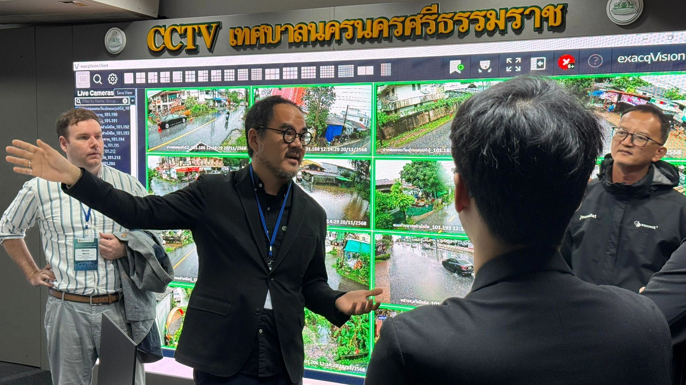
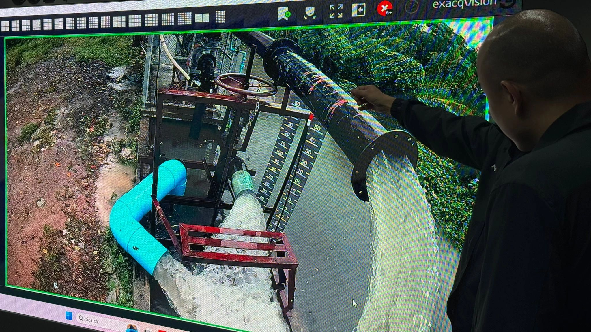
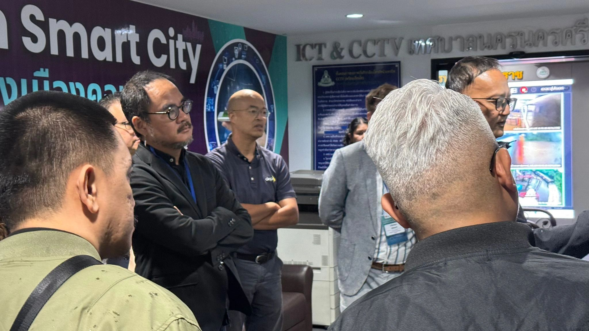
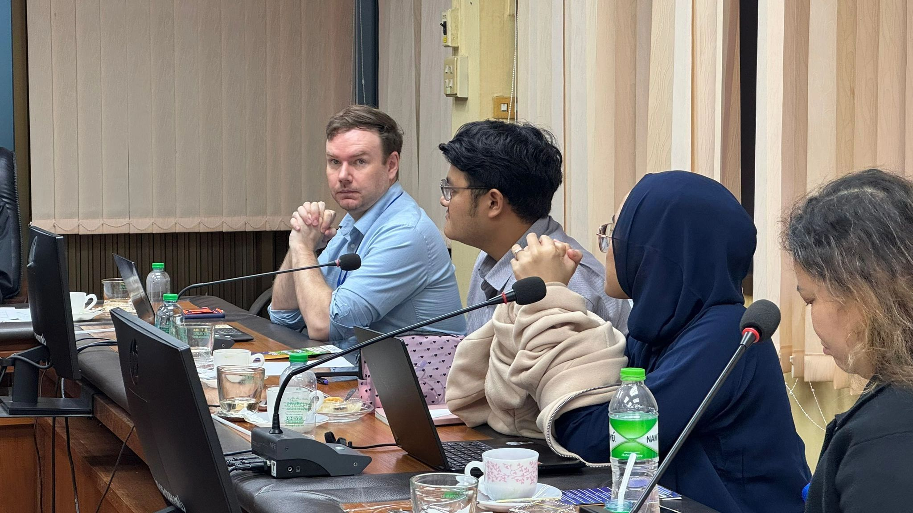
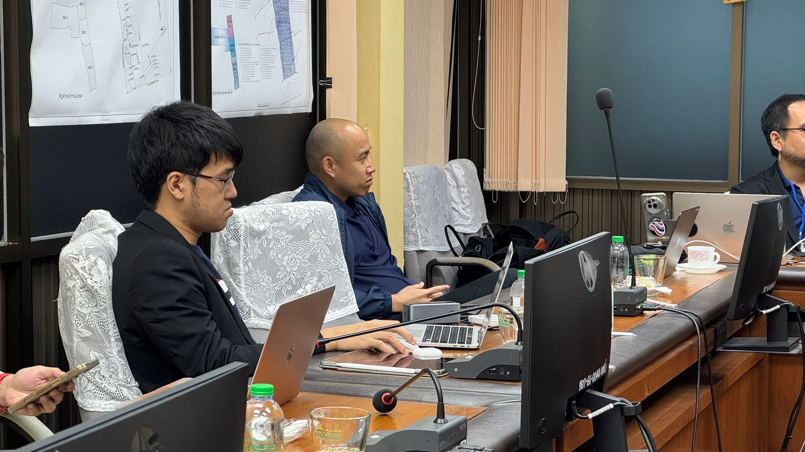
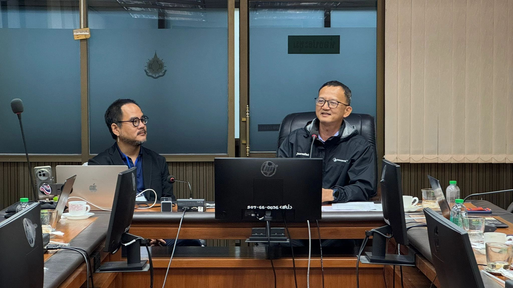
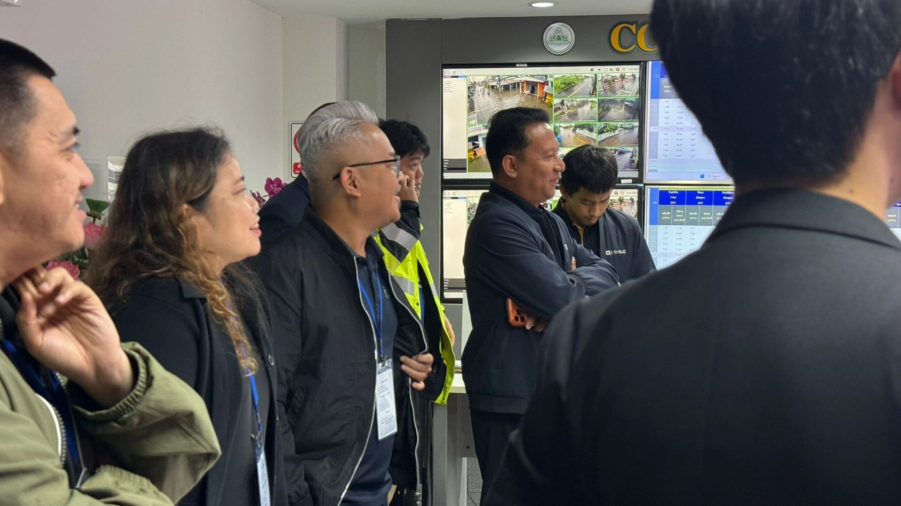
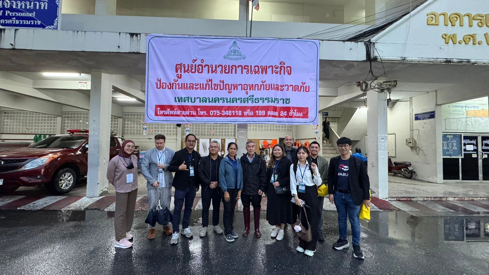
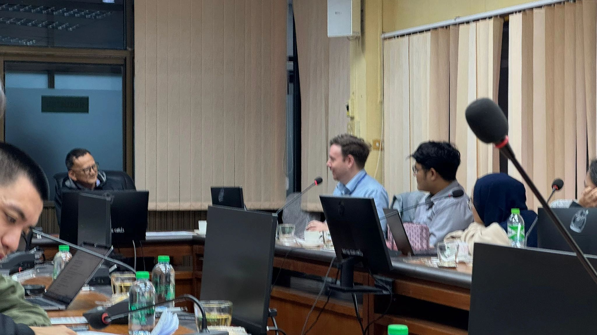
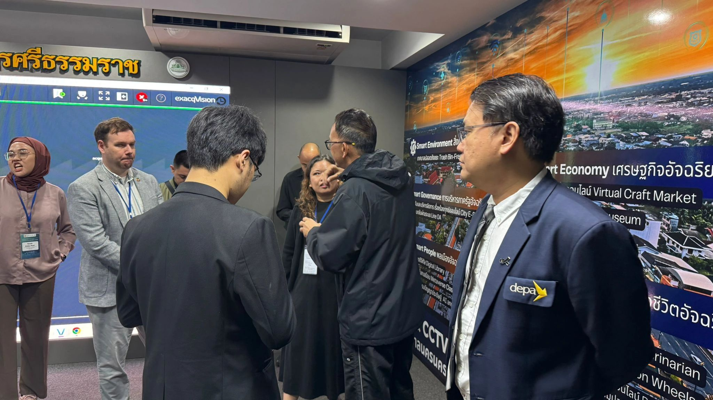
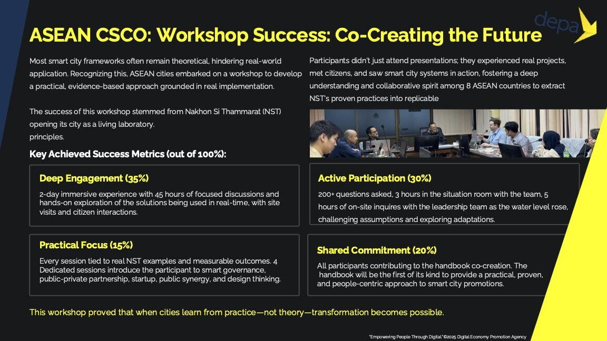
This handbook is free. The ideas are proven. The only thing missing is your city.
Join ASEAN CSCO on LinkedInSpecial thanks to the Deputy Mayors, the Smart City Division team, the municipal staff who supported logistics, the ICT center team who opened their war room to us, and everyone who kept the city running while hosting international guests during an actual flood season. You are the real story of this handbook.
This programme was made possible through the ASEAN ICT Fund, the ASEAN Smart Cities Network (ASCN), and the support of the ASEAN Secretariat. The workshop aligns with the ASEAN Smart City Action Plan (ASCAP) 2026–2035 and draws on frameworks endorsed by UNDP, UN-Habitat, and regional sustainability standards.